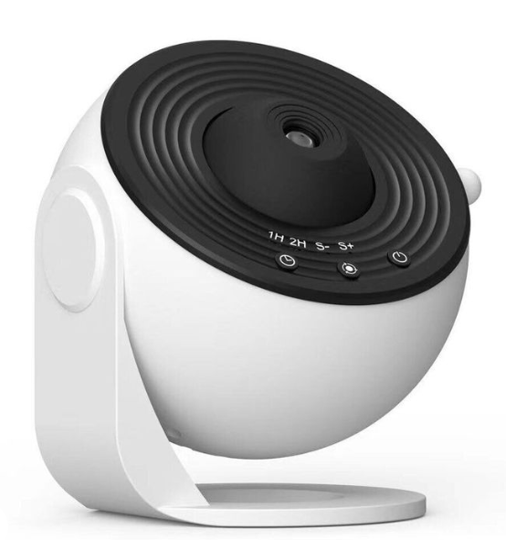

Welcome FractArt
FractArt Projector
Estado:
Apagado

Batería
80%
Encender
Buscar y Conectar
Ajustar Fractal
Zoom
Zoom: 1
Color
Parte Real (c)
Parte Imaginaria (c)
Número de Iteraciones
Seleccionar Fractal
Mandelbrot
Julia
Sierpinski
Generador de Fractales
Zoom:
1
Generar Fractal
Tiempo de duración
Modo Presentación
Cambiar automáticamente entre fractales